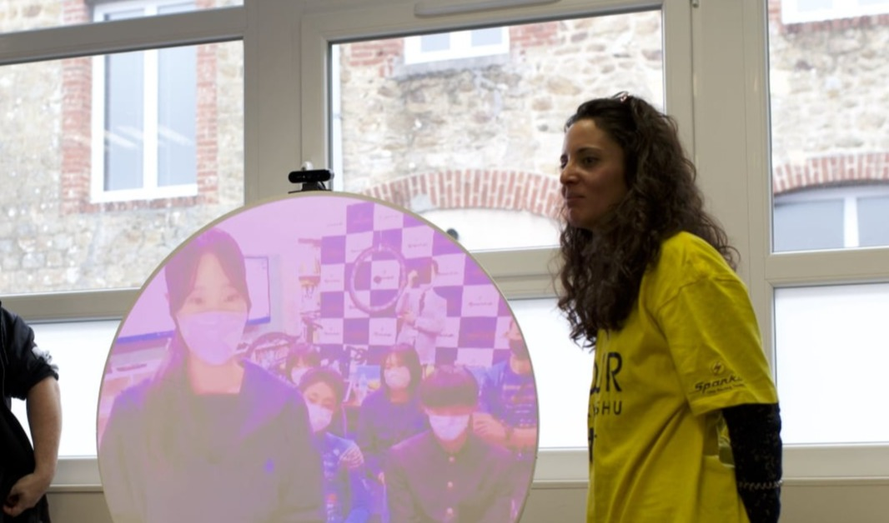

Offline Website Software
Mon parcours s’est construit au croisement du spectacle vivant, de la médiation culturelle et de la gestion de projets. Si j’ai acquis une expérience solide dans des contextes administratifs et institutionnels en dehors du champ artistique, ces expériences n’ont fait que renforcer ma capacité à appréhender les projets culturels de manière globale, structurée et concrète.
Mes premières expériences professionnelles se sont ancrées dans le spectacle vivant par le corps et le plateau, en tant qu’habilleuse - couturière pour la danse, le théâtre et l’opéra. Ce contact direct avec les artistes, les équipes techniques et les rythmes de la création a profondément façonné ma manière de travailler : attentive aux personnes, aux usages des espaces et aux réalités du terrain.
J’ai ensuite orienté mon parcours vers la médiation culturelle et la production, à travers des études dédiées et des missions menées dans le cadre de festivals et de projets artistiques. Ces expériences m’ont permis de développer une approche transversale, mêlant organisation, relation aux publics, coordination et accompagnement des équipes.
Parallèlement, mon intérêt pour le livre, le graphisme et le design m’a amenée à travailler dans des contextes variés : librairie, conseil client, communication visuelle, illustration, enrichissant ainsi mon regard sur les pratiques culturelles et les formes de transmission.
La rencontre avec le cirque de création a marqué une étape décisive. Pendant trois années, j’ai partagé le quotidien d’une compagnie en itinérance, découvrant la vie sous chapiteau, la création en mouvement et un rapport sensible au vivant. Cette immersion a profondément nourri mon envie de m’investir durablement dans le spectacle vivant, tout en conservant une ouverture aux autres disciplines artistiques.
Aujourd’hui, je mets mes compétences en production, médiation culturelle et accueil des publics au service de projets artistiques, avec le souci constant de relier les équipes, les lieux et les publics, et de contribuer à des expériences culturelles accessibles, humaines et ancrées dans le territoire.
Offline Website Software